施工事例
奈良県内での実際の施工事例をご紹介します。解体・足場・土工など幅広い工種に対応しています。
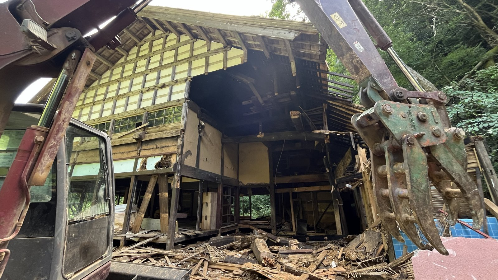
木造2階建て住宅 解体工事
築40年・延床面積約120㎡の木造住宅解体。近隣への騒音・粉塵対策を徹底しながら、3日間で安全に施工完了。
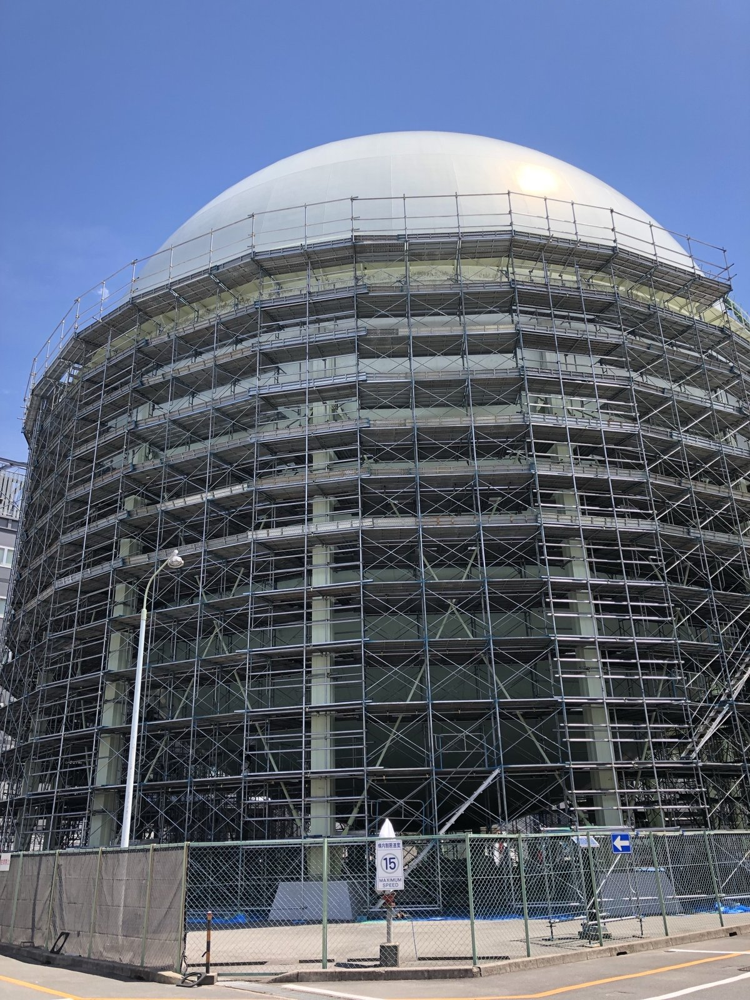
外壁塗装用 足場架設工事
2階建て住宅の外壁塗装に伴う仮設足場の架設・解体。1日で架設完了、塗装業者様との工程を円滑に調整しました。
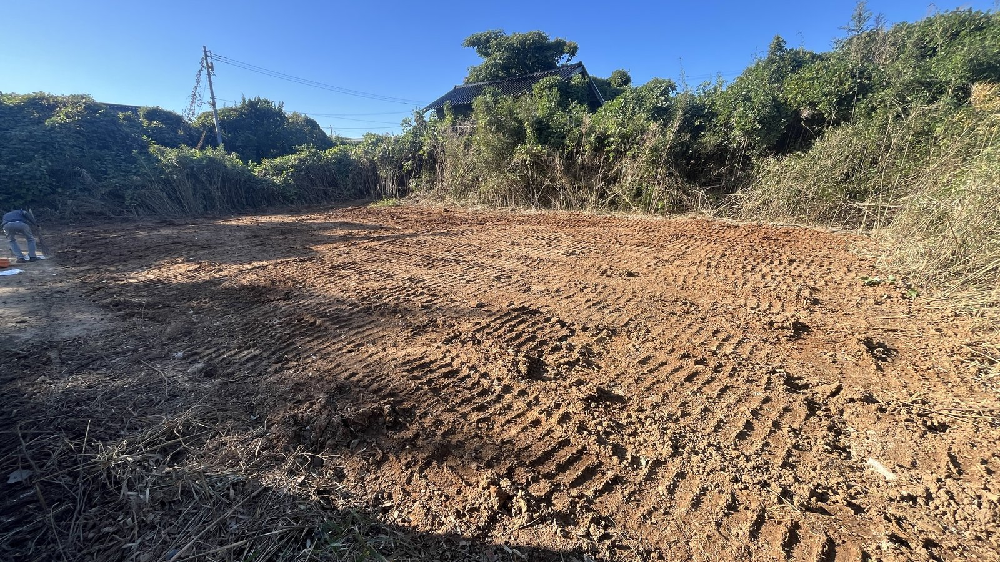
新築基礎工事 掘削・残土処理
新築住宅の基礎工事に伴う掘削・残土処理。建設会社様の工程に合わせ、迅速・丁寧に対応しました。

店舗内装 スケルトン解体
テナント退去に伴う店舗内装の全解体（スケルトン工事）。廃材の適正処理・マニフェスト発行まで一式対応。

鉄骨造倉庫 解体・撤去工事
鉄骨造200㎡倉庫の解体工事。重機搬入経路の確保から廃棄物の搬出まで、工場の操業に影響しないよう段取りしました。

ブロック塀・基礎撤去工事
道路拡幅に伴うブロック塀と基礎の撤去。行政手続きの確認から施工・残土処分まで一括対応しました。
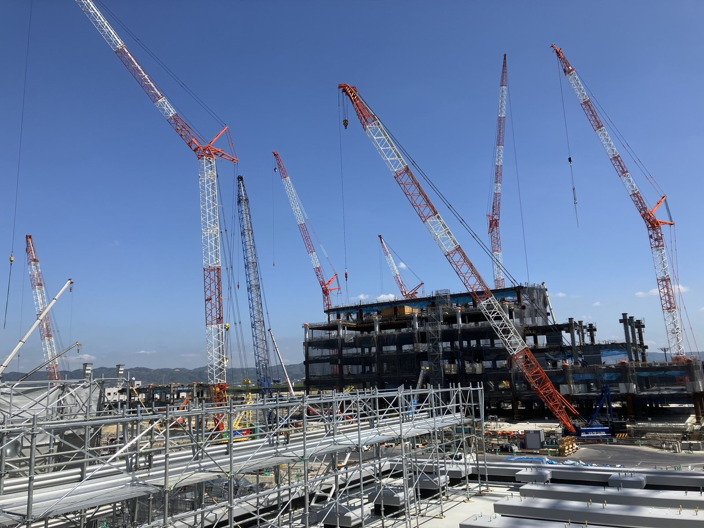
高所作業・安全施工の現場
一級とび技能士が手掛ける高所作業。安全基準を厳守した確実な施工を行いました。

解体工事 施工現場
重機を使った安全な解体作業。廃材の適正処理・マニフェスト管理まで一式対応しました。
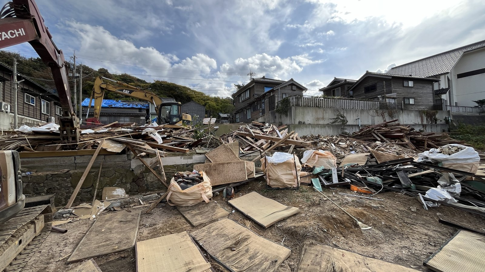
木造家屋の解体・分別
重機で解体しながら、木くず・がれきを分別して袋詰めしています。
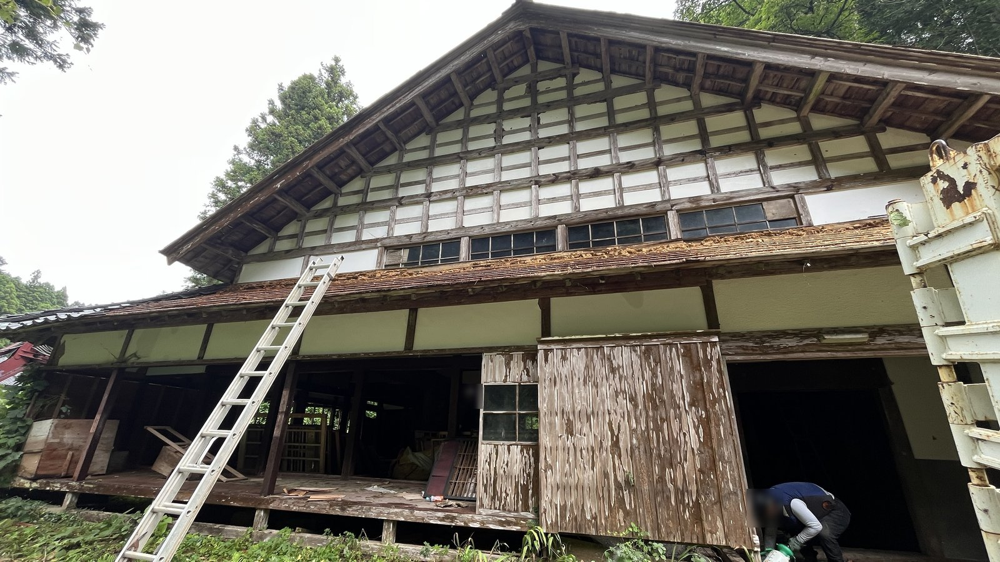
古い木造家屋の解体前
大きな木造家屋の解体に入る前の様子です。
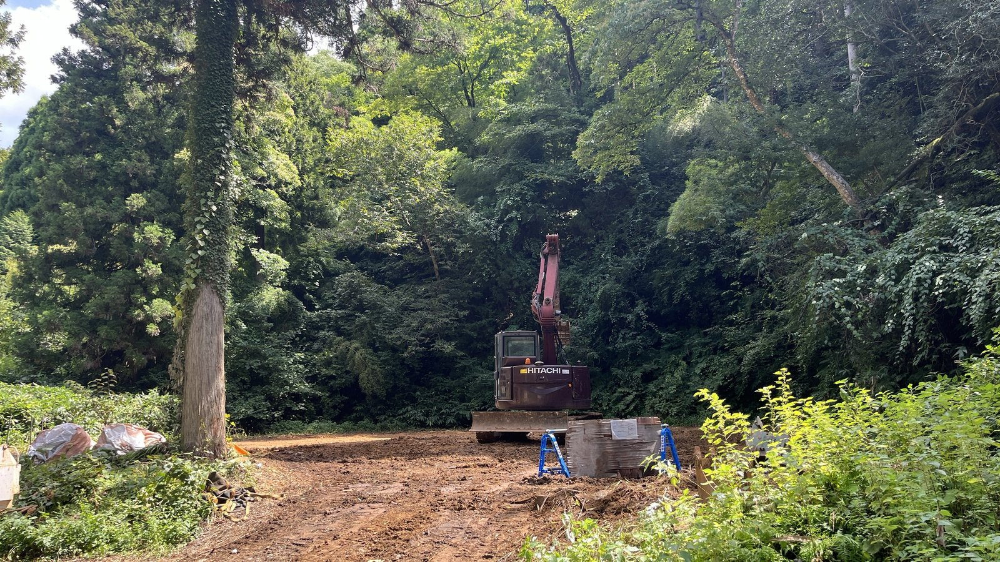
解体後の整地
建物を撤去し、重機で整地した後の様子です。
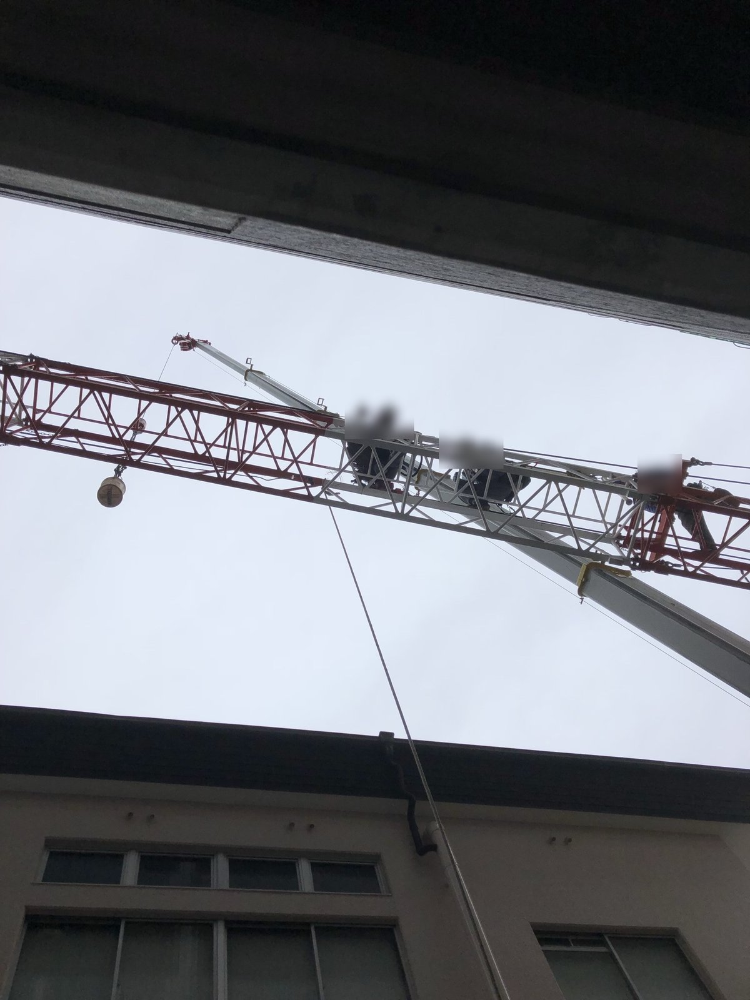
クレーン作業
大型クレーンを使った揚重作業の現場です。
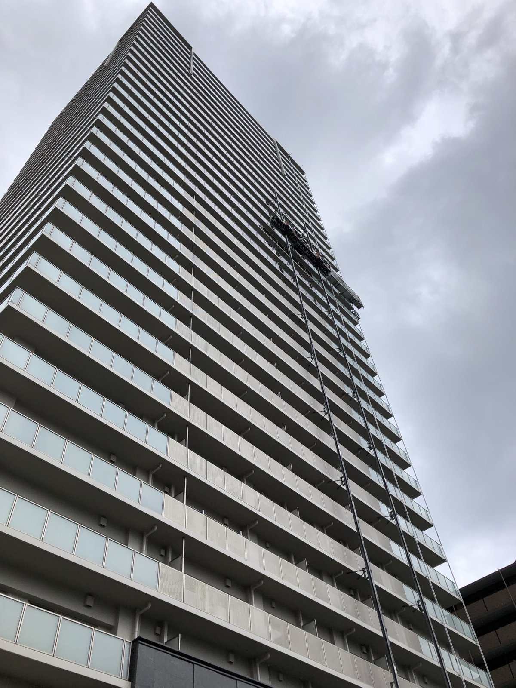
高層建物の現場
高層建物の外部での作業の様子です。
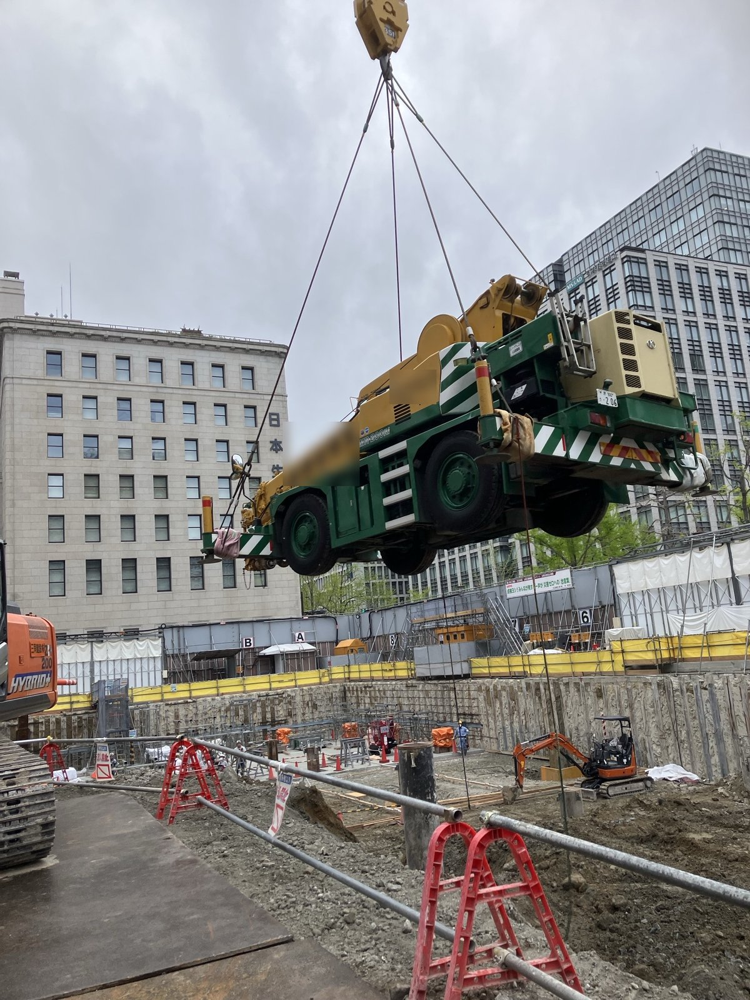
重機の吊り込み
クレーンで重機を吊り上げ、現場へ搬入しています。
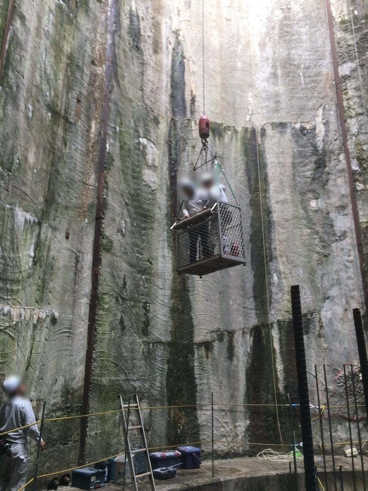
ゴンドラでの高所作業
立坑の壁面でゴンドラを使って作業しています。
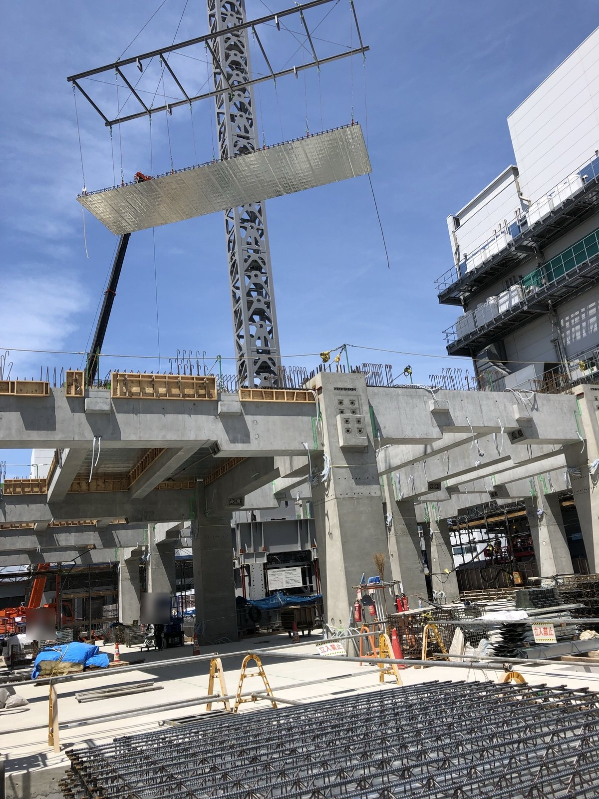
部材の吊り上げ
クレーンで大型の部材を吊り上げ、据え付けています。